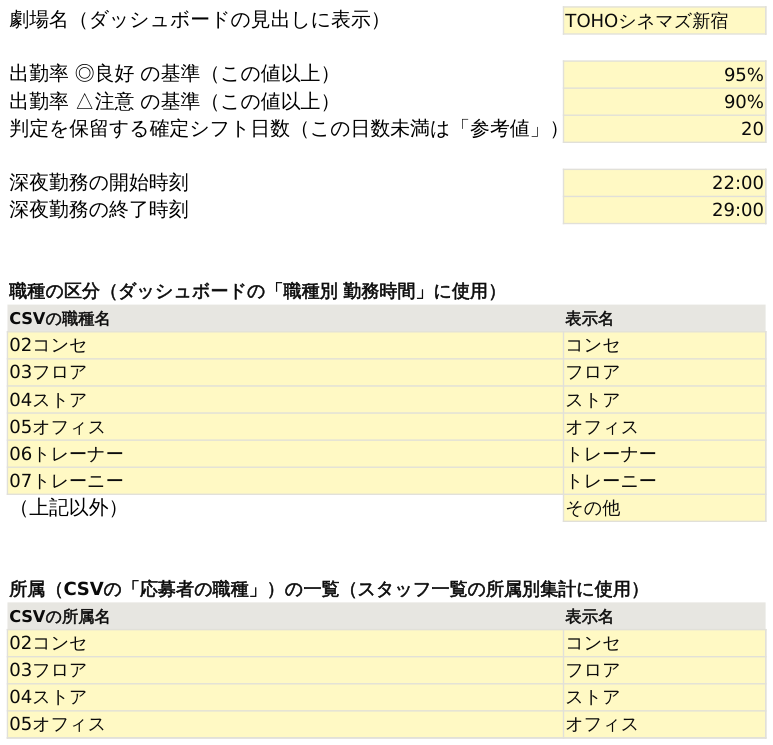
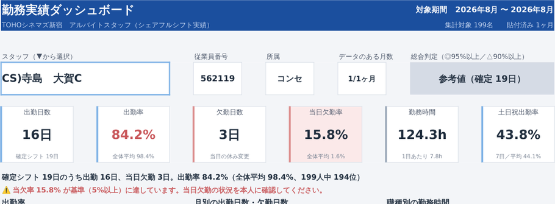

「勤務実績ダッシュボード_◯◯.xlsx」のように劇場名を付けて保存し、「設定」B1（黄色セル）に劇場名を入力します。ダッシュボードの見出しに出ます。
変更してよいのは黄色セルと CSV_1〜6 だけです。非表示の計算用シート（名簿・DB計算・計算1〜6）は表示・編集しないでください。
総合判定は出勤率だけで決まります。既定は ◎良好＝95%以上／△注意＝90%以上／✕要改善＝90%未満、確定シフト日数が20日未満の人は判定を出さず「参考値」です。当欠率のアラート＝B6（既定 5%）。これ以上のスタッフに赤い警告行と赤い塗りが出ます。
試験運用中はエリアで同じ基準に統一してください。途中で変えると劇場間・期間間の比較ができなくなります。
「ダッシュボード」はA4縦1枚に収まる設定済みです。Ctrl+P で1枚に収まっていれば完了。PDFで渡すときも同じシートで ファイル → エクスポート → PDF/XPS。


| 表示 | 意味 | 対処 |
|---|---|---|
| 2026年8月 OK | 正常。月も想定どおり | そのまま進んでOK |
| 未貼付 | そのシートにデータが無い | まだ貼っていなければ問題なし |
| ※ 列名が見つかりません | 1行目にヘッダーが無い、または列名が違う | A1セルからヘッダー行ごと貼り直し。列名が違う場合はご連絡ください |
| ※ 6,000行を超えています | 1ヶ月の行数が上限超え | 超過分は集計されません。ご連絡ください |
| ※ 対象月以外の日付の行が ○行あります | 前のデータが残っている／期間が月をまたいでいる | シートを全選択→Delete してから貼り直し |
| ※ 読み取れない値があります | 日付や従業員番号が読めない行がある | CSVをExcelで開き直して貼り直し。続く場合はご連絡ください |
| ※ CSV_1→CSV_6 が古い月から順に並んでいません | 月の順番が逆になっている | 古い月から順に貼り直し（月別推移の並びと最新の名前の採用に影響） |
| 見出し右上の「※ 貼付データに問題があります」 | 上のいずれかの警告が出ている | 「使い方」の貼付状況を確認 |
| 場所と表示 | 意味 | どうするか |
|---|---|---|
| サマリーの下に赤い「⚠ 当欠率 ○% が基準に達しています」 | 当日欠勤率が設定!B6（既定5%）以上 | 面談で当日欠勤の状況を確認。基準はエリアで統一 |
| 総合判定に「参考値（確定シフト ○日）」 | 確定シフト日数が設定の日数（既定20日）未満 | 異常ではありません。出勤率は出ているので参考として見る |
| 月別の実績に「—」 | その月にその人のシフトデータが無い（在籍前・退職後など） | 対応不要。0日とは区別しています |
| 出勤率に「－」 | 確定シフト日数が0 | 対応不要 |
| 欠勤の一覧に「該当なし」 | 当日休み変更が0日 | 対応不要 |
| 休みへの変更の下に赤い「※ シフト日より後に…」 | シフト日より後に編集された休み行がある | その日の実態を確認。欠勤には含めていません |
| スタッフ欄に「← CSV_1 にデータを貼り付けてください」 | どのシートにもデータが無い | SETUP 5 へ |